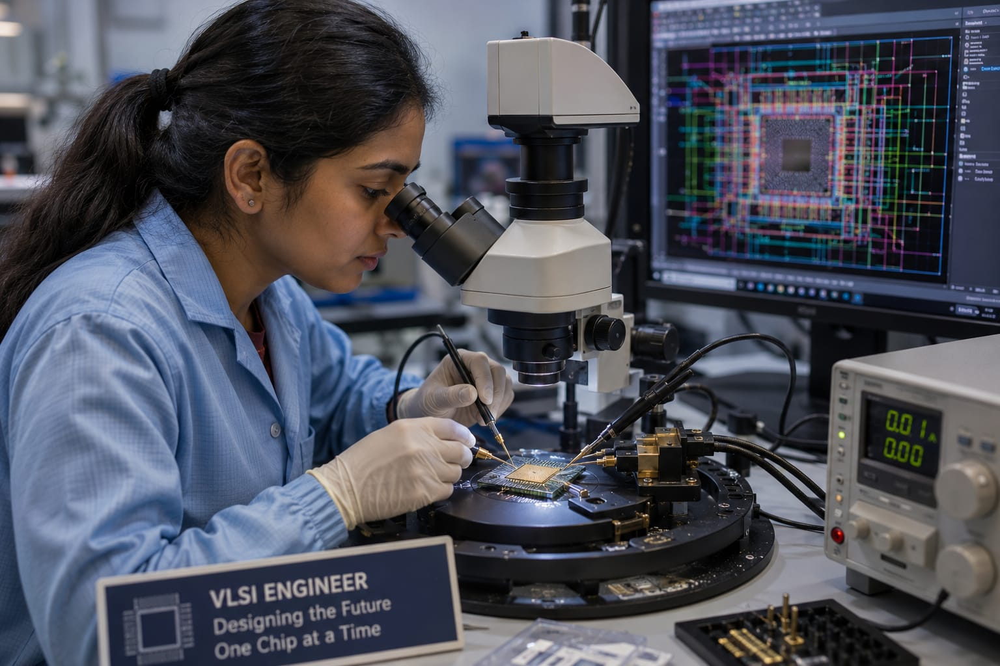

- Think about your mobile phone.
- You can open apps, play games, take photos and watch videos very quickly and easily.
- Have you ever thought "how it works so fast?"
- Inside your phone, there are tiny electronic circuits that are built into chips.
- The person who designs these chips is called a VLSI engineer.
- 👉 In simple words: VLSI Engineers design the tiny chips that make modern electronic devices work.
VLSI (Very Large Scale Integration) Engineer
What Do They Do?

🎓 How to Become a VLSI Engineer
These beginner-level courses help students learn electronics, electrical circuits, semiconductor technology, computer hardware, and chip design fundamentals.
Diploma in Electronics and Communication Engineering (ECE)
Duration: 3 Years
Eligibility: 10th Pass with Science and Mathematics (Minimum 35%–45% marks)
Entrance Exam: State-level Polytechnic Entrance Exams / Merit-based Admission
Diploma in Electronics Engineering
Duration: 3 Years
Eligibility: 10th Pass with Science and Mathematics (Minimum 35%–45% marks)
Entrance Exam: State-level Polytechnic Entrance Exams / Merit-based Admission
Diploma in Electrical and Electronics Engineering (EEE)
Duration: 3 Years
Eligibility: 10th Pass with Science and Mathematics (Minimum 35%–45% marks)
Entrance Exam: State-level Polytechnic Entrance Exams / Merit-based Admission
Diploma in Electrical Engineering
Duration: 3 Years
Eligibility: 10th Pass with Science and Mathematics (Minimum 35%–45% marks)
Entrance Exam: State-level Polytechnic Entrance Exams / Merit-based Admission
Diploma in IC Manufacturing
Duration: 3 Years
Eligibility: 10th Pass with minimum 35%–45% marks
Entrance Exam: AICTE-approved State Technical Board Examinations / Merit-based Admission
📝 Exam Details
(Click on the exam name to see full details)
Polytechnic Entrance Exam Merit-Based AdmissionNote: Most VLSI Engineers continue with B.Tech in Electronics, ECE, Electrical Engineering, or VLSI Design after diploma studies. Core chip-design roles usually require advanced engineering education and specialized VLSI training.
These undergraduate courses help students learn semiconductor devices, digital electronics, chip architecture, VLSI design, embedded systems, and electronic circuit design.
B.Tech in VLSI
Duration: 4 Years
Eligibility: 10+2 Pass with Physics, Chemistry, and Mathematics (Minimum 60% aggregate)
Entrance Exam: JEE Main / JEE Advanced / State & University Engineering Entrance Exams
B.Tech in Electronics Engineering (VLSI Design & Technology)
Duration: 4 Years
Eligibility: 10+2 Pass with Physics, Chemistry, and Mathematics (Minimum 60% aggregate)
Entrance Exam: JEE Main / JEE Advanced / State & University Engineering Entrance Exams
B.Tech in Electronics Engineering
Duration: 4 Years
Eligibility: 10+2 Pass with Physics, Chemistry, and Mathematics (Minimum 60% aggregate)
Entrance Exam: JEE Main / JEE Advanced / State & University Engineering Entrance Exams
B.Tech in Electronics and Communication Engineering (ECE)
Duration: 4 Years
Eligibility: 10+2 Pass with Physics, Chemistry, and Mathematics (Minimum 45%–50% marks)
Entrance Exam: JEE Main / JEE Advanced / State Engineering Entrance Exams
B.Tech in Electrical and Electronics Engineering (EEE)
Duration: 4 Years
Eligibility: 10+2 Pass with Physics, Chemistry, and Mathematics (Minimum 45%–50% marks)
Entrance Exam: JEE Main / State Engineering Entrance Exams / University Entrance Tests
B.Tech in Electrical Engineering
Duration: 4 Years
Eligibility: 10+2 Pass with Physics, Chemistry, and Mathematics (Minimum 45%–50% marks)
Entrance Exam: JEE Main / State Engineering Entrance Exams / University Entrance Tests
B.Tech in Semiconductor Engineering
Duration: 4 Years
Eligibility: 10+2 Pass with Physics, Chemistry, and Mathematics (Minimum 45%–50% marks)
Entrance Exam: JEE Main / State Engineering Entrance Exams / University Entrance Tests
📝 Exam Details
(Click on the exam name to see full details)
JEE Main JEE Advanced State Engineering Entrance Exams University Entrance ExamsNote: You do not need a dedicated VLSI degree to become a VLSI Engineer.
A B.Tech in Electronics & Communication Engineering (ECE) or Electrical & Electronics Engineering (EEE), combined with VLSI training and chip-design skills, can also lead to careers in semiconductor and chip design industries.
These lateral-entry degree programs help diploma students advance into semiconductor engineering, VLSI design, digital electronics, embedded systems, and chip development.
B.Tech Lateral Entry in Electronics Engineering (VLSI Design)
Duration: 3 Years (Direct Entry into 2nd Year)
Eligibility: 3-Year Engineering Diploma in Electronics, ECE, or related branches with at least 45% marks
Entrance Exam: State Lateral Entry Entrance Tests (JELET, ECET, etc.)
B.Tech Lateral Entry in Electronics and Communication Engineering (ECE)
Duration: 3 Years
Eligibility: 3-Year Engineering Diploma in relevant technical streams
Entrance Exam: State Lateral Entry Entrance Tests
B.Tech Lateral Entry in Electrical and Electronics Engineering (EEE)
Duration: 3 Years
Eligibility: 3-Year Engineering Diploma in Electrical, Electronics, or related branches
Entrance Exam: State Lateral Entry Entrance Tests
Note: Most VLSI Design Engineer positions require a B.Tech degree.
Diploma holders generally use the lateral-entry route to enter ECE, Electronics Engineering, or VLSI-focused programs before pursuing careers in chip design, verification, semiconductor manufacturing, and microelectronics.
These advanced programs help graduates specialize in VLSI design, semiconductor technology, chip verification, physical design, microelectronics, and integrated circuit development.
M.Tech in VLSI Design
Duration: 2 Years
Eligibility: Graduate (B.Tech / B.E. in ECE, EEE, Instrumentation, or M.Sc Electronics)
Entrance Exam: GATE / State PGCET / University PG Tests
M.Tech in Microelectronics and VLSI Design
Duration: 2 Years
Eligibility: Graduate (B.Tech / B.E. in ECE, EEE, Instrumentation, or M.Sc Electronics)
Entrance Exam: GATE / State PGCET / University PG Tests
M.Tech in Semiconductor Technology
Duration: 2 Years
Eligibility: Graduate in Electronics, Electrical, Instrumentation, or Related Engineering Fields
Entrance Exam: GATE / State PGCET / University Entrance Exams
Certificate Program in VLSI Design
Duration: 6 Months to 1 Year
Eligibility: Finished B.Tech in ECE / EEE / EI Engineering
Entrance Exam: Institutional Entrance Tests / Merit-Based Selection
📝 Exam Details
(Click on the exam name to see full details)
GATE State PGCET Institutional Entrance Test University PG Entrance Exams Merit-Based AdmissionNote: While a B.Tech degree is usually sufficient for entry-level VLSI Engineer roles, M.Tech and specialized VLSI certification programs help students move into advanced chip design, verification, physical design, semiconductor fabrication, and research-oriented positions.
Note:
(Age limits, marks, and admission process may vary depending on the college or state.
Below are some colleges that offer these courses.
These courses are available in many colleges and universities across India. You can choose colleges based on your location, budget, and entrance exams.)
🏫 Colleges offering these courses in India
(Tap on a college to visit the official website)
After Class 10
Parul University, Vadodara, Gujarat Government Polytechnic, Kasargod, Kerala PSG Polytechnic College, Coimbatore, Tamil Nadu Government Polytechnic Pune, Maharashtra Galgotias University, Noida, UPAfter Class 12
Presidency University, Bengaluru, Karnataka SRM Institute of Science and Technology (SRMIST), Tamil Nadu Indian Institute of Technology (IIT), Jodhpur, Rajasthan Manipal Institute of Technology (MIT), Manipal Indian Institute of Technology (IIT), Jodhpur, Rajasthan Indian Institute of Technology (IIT), Guwahati, Assam Chandigarh University, Punjab SRM University,Amaravati, APAfter Diploma (Lateral Entry)
Manav Rachna University, Faridabad, Haryana Chandigarh University, Punjab Lovely Professional University, PunjabAfter Graduation
Indian Institute of Technology (IIT) Hyderabad, Hyderabad SRM Institute of Science and Technology, Tamil Nadu Indian Institute of Technology (IIT), Kanpur, UP National Institute of Technology (NIT), Kozhikode, Kerala Indian Institute of Science, Bengaluru, Karnataka IILM University, Noida, UP Indian Institute of Science, Bengaluru, KarnatakaSTEP 1
Imagine you are working as a VLSI Engineer.
STEP 2
Your company asks you to design a chip for a new smartphone.
STEP 3
You design tiny electronic circuits that will go inside the chip.
STEP 4
You use special software to test whether the chip works correctly.
STEP 5
You check if the chip can run apps, games, and other features smoothly.
STEP 6
If you find any problems, you improve the design and test it again.
STEP 7
If you enjoy electronics, technology, and creating the chips inside smart devices, this career may be right for you.
Where do VLSI Engineers work? (Job Roles + Growth)
VLSI Engineers work in : Semiconductor companies, Chip design companies, Electronics companies, Consumer electronics companies, Automotive companies, Telecommunications companies, Aerospace companies, and Research laboratories.
🟢 Beginner Roles
Junior Silicon Layout Associate
(After Short-Term Certification / Diploma)
Performs basic schematic entry and assists in running initial layout clean-ups.
Graduate Engineer Trainee (VLSI)
(After Diploma / B.Tech)
Writes simple test scripts and learns to use electronic automation tools.
🔵 Mid-Level Roles
ASIC Design & Verification Engineer
(After B.Tech + Industrial Certification)
Writes hardware description code to create and test digital logic circuits on chips.
Physical Design Engineer
(After B.Tech + Experience)
Maps out the microscopic placement and routing of transistors on silicon wafers.
🟣 Advanced Roles
Principal Chip Architect
(After M.Tech + Advanced Specialization)
Plans system-level chip for AI processors and advanced semiconductor products.
Director of Semiconductor Engineering
(After Advanced Executive Program + Experience)
Leads global engineering teams developing semiconductor and chip technologies.
Semiconductor Companies
Design advanced chips used in computers, smartphones, and AI devices.
Consumer Electronics Companies
Develop processors and integrated circuits for electronic products.
Automotive Technology Companies
Create chips used in electric vehicles, autonomous driving, and smart systems.
Data Center & AI Companies
Build high-performance processors and AI accelerator chips.
Telecommunication Companies
Develop chips used in 5G networks, satellites, and communication systems.
Research & Development Organizations
Create next-generation semiconductor technologies and chip architectures.
(Click Yes or No for each question)
1. Have you ever used a mobile phone, tablet, computer, or video game console?
2. When you use a mobile phone, it works really fast, right? Have you ever wondered how it works so fast?
3. Do you know there is a tiny computer chip inside your mobile phone?
4. Imagine you are working as a VLSI Engineer for a company that makes laptops. The company wants to develop a new processor for its laptops. A processor is the main chip in a laptop that helps it perform different tasks. Your job is to design the tiny circuits inside the processor so it can perform different tasks quickly and efficiently. Would you enjoy doing this kind of work?
5. Imagine you designed a tiny chip for a mobile phone. The chip you made helps the phone work faster, play games smoothly, run apps, and perform many tasks. Does this sound exciting to you?